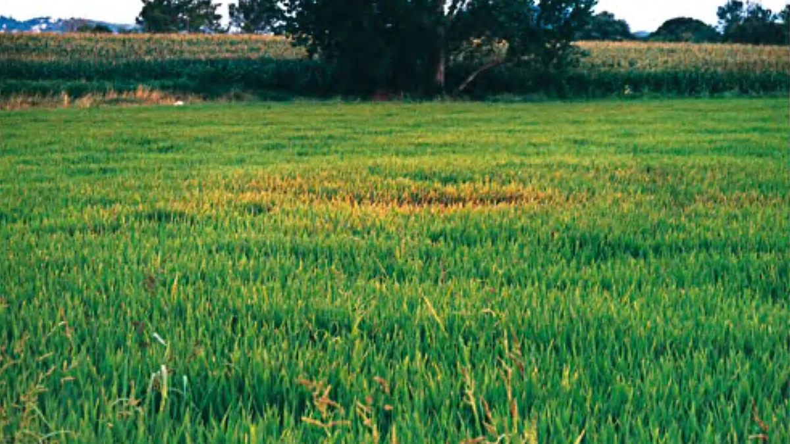

धान का झोंका रोग
Rice Blast (Pyricularia oryzae) — Causes, Symptoms & Management
धान की पत्तियों पर नाव जैसे भूरे धब्बे और बाली की गर्दन का काला पड़कर टूटना — यह झोंका (ब्लास्ट) रोग है। गर्दन झोंका में 80% तक फसल बर्बाद हो सकती है। सही पहचान और समय पर छिड़काव से इसे रोका जा सकता है।
✍️ Kunal Rajput — KrashiMitra⏱️ 7 मिनट पढ़ें📅 जुलाई 2026

धान के खेत में झोंका (ब्लास्ट) रोग का प्रकोप — सूखे, भूरे धब्बों वाले हिस्से साफ दिखते हैं।
धान की सबसे बड़ी बीमारी — झोंका (ब्लास्ट) रोग
📉
50–80%
उपज में नुकसान
🌧️
नमी + बादल
सबसे खतरनाक मौसम
🧪
ट्राइसाइक्लाजोल
सबसे असरदार दवा
📖
भूमिका
धान भारत की सबसे बड़ी खाद्यान्न फसल है — उत्तर प्रदेश, बिहार, पश्चिम बंगाल, छत्तीसगढ़ और पंजाब जैसे राज्यों में करोड़ों किसान इस पर निर्भर हैं। और धान की सबसे विनाशकारी बीमारी है झोंका रोग (Rice Blast), जिसे किसान "ब्लास्ट" या "धान की झुलसा" भी कहते हैं।
यह रोग इतना खतरनाक है कि अगर गर्दन झोंका (Neck Blast) बाली निकलते समय लग जाए, तो पूरी बाली खाली रह जाती है और 80% तक फसल बर्बाद हो सकती है। इस लेख में हम धान के झोंका रोग की पूरी जानकारी देंगे — पहचान, कारण, नुकसान और रोकथाम — सरल हिंदी में, जो हर किसान आसानी से समझ सके।
विज्ञापन
🦠
धान का झोंका रोग क्या है?
झोंका रोग (Rice Blast) धान की सबसे विनाशकारी बीमारी मानी जाती है। यह Pyricularia oryzae (Magnaporthe oryzae) नामक फफूंद (Fungus) से होता है। यह फफूंद धान के तीन हिस्सों पर हमला कर सकती है — पत्ती, गांठ और बाली की गर्दन।
पत्तियों पर यह नाव या आँख के आकार के धब्बे बनाती है, और सबसे घातक रूप गर्दन झोंका है, जिसमें बाली की गर्दन काली पड़कर टूट जाती है और दाने भरते ही नहीं। नमी और बादल वाले मौसम में यह बहुत तेजी से फैलती है।
🧬
झोंका रोग की तीन अवस्थाएँ याद रखें — पत्ती झोंका (शुरुआत), गांठ झोंका, और गर्दन झोंका (सबसे ज्यादा नुकसान)। बचाव इन तीनों को समय रहते रोकने पर टिका है।
⚗️
रोग के कारण
झोंका नियंत्रण के लिए सबसे पहले यह समझना जरूरी है कि यह रोग क्यों और कब बढ़ता है:
फफूंद के बीजाणु (conidia): हवा, ओस और बारिश की छींटों के साथ उड़कर स्वस्थ पौधों पर पहुँचते हैं।
अधिक नमी और बादल वाला मौसम: लगातार नमी, कोहरा और रात की ओस फफूंद को तेजी से बढ़ाते हैं।
अनुकूल तापमान (25–28°C): मानसून का ठंडा-नम मौसम रोग के लिए सबसे अनुकूल है।
ज़रूरत से ज़्यादा यूरिया: अधिक नाइट्रोजन से पत्तियाँ मुलायम होती हैं और फफूंद आसानी से हमला करती है।
संक्रमित बीज व ठूंठ (stubble): पिछली फसल के अवशेष और रोगग्रस्त बीज में फफूंद छिपी रहती है।
घनी रोपाई: बहुत पास-पास लगे पौधों के बीच नमी बनी रहती है, जिससे रोग फैलता है।
🔍
पहचान और लक्षण — कैसे जानें कि रोग लग गया है?
🍃 पत्ती झोंका (Leaf Blast)
पत्तियों पर नाव या आँख के आकार के धब्बे बनते हैं।
धब्बे के बीच में राख जैसा सलेटी-सफेद और किनारे भूरे-लाल होते हैं।
ज़्यादा संक्रमण में धब्बे आपस में मिलकर पूरी पत्ती सुखा देते हैं।
🌾 गर्दन झोंका (Neck Blast — सबसे घातक)
बाली के ठीक नीचे की गर्दन काली पड़कर टूट जाती है।
दानों तक पोषण नहीं पहुँचता — बाली खाली और झूठे दाने रह जाते हैं।
खेत में जगह-जगह झुकी, सफेद-सी खाली बालियाँ दिखने लगती हैं।
🪢 गांठ झोंका (Node Blast)
तने की गांठ (node) काली पड़ जाती है और वहीं से पौधा टूट जाता है।
गांठ के ऊपर का हिस्सा सूखने लगता है।
💨
रोग कैसे फैलता है?
हवा से बीजाणु: फफूंद के कोनिडिया हवा के साथ दूर-दूर तक उड़कर स्वस्थ पौधों पर बैठते हैं — यही मुख्य तरीका है।
ओस और बारिश की छींटें: पत्तियों पर बनी नमी में बीजाणु अंकुरित होकर अंदर घुसते हैं।
संक्रमित बीज: रोगग्रस्त बीज से रोग शुरू से ही खेत में आ जाता है।
फसल अवशेष (ठूंठ): पिछली फसल के संक्रमित ठूंठ में फफूंद जीवित रहती है।
सिंचाई का पानी और मित्र-खरपतवार: पास के संक्रमित पौधों व घास से रोग पहुँचता है।
ℹ️
रोग सबसे तेज़ तब फैलता है जब दिन गर्म और रातें नम/ठंडी हों और पत्तियों पर लंबे समय तक ओस टिकी रहे — इसलिए मानसून में रोज़ निगरानी ज़रूरी है।
विज्ञापन
📊
नुकसान — कितना खतरनाक है यह रोग?
⚠️
गर्दन झोंका बाली निकलते समय लगे तो पूरी फसल चौपट हो सकती है। सामान्य संक्रमण में 10–30% नुकसान, पर गर्दन झोंका में 80% तक — क्योंकि दाने भरते ही नहीं। इसीलिए बाली निकलने से पहले बचाव सबसे ज़रूरी है।
नीचे दी गई तालिका से स्वस्थ और झोंका-ग्रस्त धान की पहचान आसानी से की जा सकती है:
पहचान बिंदु
✅ स्वस्थ धान
❌ झोंका-ग्रस्त धान
पत्तियाँ
एक-सी हरी, साफ
नाव जैसे भूरे धब्बे, राख जैसा बीच
बाली की गर्दन
मजबूत, हरी
काली, कमज़ोर, टूटी हुई
दाने
भरे और भारी
खाली, झूठे, हल्के
तने की गांठ
सामान्य हरी-भूरी
काली, वहीं से टूटती
खेत का दृश्य
एक-सी हरी लहलहाती फसल
जगह-जगह सफेद, खाली, झुकी बालियाँ
उपज
अच्छी, भरपूर
बहुत कम, कई बार आधे से ज़्यादा घाटा
🛡️
रोकथाम के उपाय
रोग-रोधी किस्में चुनें: पूसा बासमती-1637 जैसी ब्लास्ट-रोधी किस्में — क्षेत्र अनुसार KVK से पुष्टि करें।
संतुलित नाइट्रोजन दें: यूरिया एक साथ न डालें — 2–3 किश्तों में दें; पोटाश ज़रूर दें, इससे पौधा मजबूत होता है।
बीज उपचार करें: बुवाई से पहले बीज को फफूंदनाशक/ट्राइकोडर्मा से उपचारित करें।
घनी रोपाई से बचें: पौधों के बीच उचित दूरी रखें ताकि हवा लगे और नमी न ठहरे।
जल प्रबंधन: खेत में पानी का स्तर नियंत्रित रखें; बीच-बीच में खेत सुखाएं।
ठूंठ और अवशेष हटाएं: पिछली फसल के संक्रमित ठूंठ जलाकर या हटाकर नष्ट करें।
🌿
जैविक नियंत्रण
🌱
जैविक उपाय पर्यावरण के अनुकूल हैं और मित्र-जीवों को नुकसान नहीं पहुँचाते। शुरुआती अवस्था और बचाव के लिए इन्हें प्राथमिकता दें।
ट्राइकोडर्मा विरिडी: बीज उपचार (4 ग्राम/किग्रा) और खेत में मिलाने से फफूंद रुकती है।
स्यूडोमोनास फ्लोरेसेंस: बीज उपचार व 10 ग्राम/लीटर घोल का छिड़काव — झोंका पर असरदार।
नीम आधारित छिड़काव: रोग की शुरुआत रोकने में सहायक।
संतुलित पोषण: सिलिकॉन/पोटाश युक्त खाद पौधे की रोग-प्रतिरोधक क्षमता बढ़ाते हैं।
🧪
रासायनिक नियंत्रण
ट्राइसाइक्लाजोल झोंका के लिए सबसे भरोसेमंद दवा है। गर्दन झोंका रोकने के लिए बाली निकलने से ठीक पहले (boot-leaf अवस्था) छिड़काव सबसे कारगर होता है:
दवाई का नाम
मात्रा
तरीका
ट्राइसाइक्लाजोल 75% WP
0.6 ग्राम/लीटर
पत्ती व गर्दन झोंका — मुख्य दवा
आइसोप्रोथायोलेन 40% EC
1.5 मि.ली./लीटर
छिड़काव
कार्बेन्डाजिम 50% WP
1 ग्राम/लीटर
शुरुआती संक्रमण पर
एज़ोक्सिस्ट्रोबिन 25% SC
1 मि.ली./लीटर
छिड़काव
⚠️
गर्दन झोंका के लिए दो छिड़काव करें — पहला बाली निकलने से पहले, दूसरा 50% बाली निकलने पर। एक ही दवा बार-बार न दोहराएं। किसी भी रसायन से पहले नजदीकी KVK या कृषि विभाग से सलाह ज़रूर लें।
🌱
बीज उपचार (बुवाई से पहले)
झोंका से बचाव की शुरुआत बीज से होती है — उपचारित बीज शुरुआती संक्रमण को काफी हद तक रोक देता है:
ट्राइसाइक्लाजोल/कार्बेन्डाजिम: 2 ग्राम प्रति किग्रा बीज की दर से उपचार करें।
ट्राइकोडर्मा विरिडी: 4 ग्राम प्रति किग्रा बीज — जैविक विकल्प।
नमक-पानी छँटाई: बुवाई से पहले हल्के (तैरते) रोगग्रस्त बीज नमक-पानी के घोल में अलग कर दें।
स्वस्थ, प्रमाणित बीज: हमेशा रोगमुक्त, प्रमाणित स्रोत से ही बीज लें।
🚜
खेत प्रबंधन
नियमित निगरानी: मानसून में हफ्ते में 2 बार पत्तियों और बाली की गर्दन की जाँच करें।
नाइट्रोजन संतुलन: यूरिया किश्तों में दें — एक साथ ज़्यादा देने से रोग बढ़ता है।
पोटाश और सिलिकॉन: इनसे पौधे की कोशिका-भित्ति मजबूत होकर रोग-प्रतिरोध बढ़ता है।
जल प्रबंधन: खेत को बीच-बीच में सुखाएं; लगातार गहरा पानी न भरें।
अवशेष नष्ट करें: कटाई के बाद संक्रमित ठूंठ और पराली हटाएं ताकि अगली फसल में रोग न आए।
👨🌾
विशेषज्ञ सलाह
💡
बाली निकलने से पहले ट्राइसाइक्लाजोल का छिड़काव ज़रूर करें — गर्दन झोंका का यही सबसे बड़ा बचाव है।
बादल और नमी वाले दिनों में रोज़ निगरानी करें।
ज़रूरत से ज़्यादा यूरिया कभी न दें।
नजदीकी KVK से क्षेत्र की रोग-रोधी किस्म और सही दवा जानें।
किसान कॉल सेंटर: +91 9870951001 — निःशुल्क।
✅
निष्कर्ष
धान का झोंका रोग गंभीर चुनौती है, लेकिन सही रणनीति से इसे काबू में रखा जा सकता है। तीन बातें याद रखें: रोग-रोधी किस्म और उपचारित बीज चुनें, यूरिया संतुलित दें, और बाली निकलने से पहले ट्राइसाइक्लाजोल का छिड़काव करके गर्दन झोंका से बचें।
एक सतर्क किसान ही सफल किसान होता है।
विज्ञापन
❓
अक्सर पूछे जाने वाले सवाल
1धान का झोंका रोग किससे होता है?
धान का झोंका (ब्लास्ट) रोग Pyricularia oryzae (Magnaporthe oryzae) नामक फफूंद (Fungus) से होता है। इसके बीजाणु हवा, ओस और बारिश की छींटों से फैलते हैं और नमी वाले बादल वाले मौसम में तेजी से बढ़ते हैं।
2धान के झोंका रोग की पहचान कैसे करें?
पत्तियों पर नाव या आँख के आकार के धब्बे बनते हैं — बीच में राख जैसा सलेटी और किनारे भूरे-लाल। बाद में बाली की गर्दन काली पड़कर टूट जाती है (गर्दन झोंका) और दाने खाली रह जाते हैं।
3गर्दन झोंका (Neck Blast) सबसे खतरनाक क्यों है?
गर्दन झोंका में बाली के ठीक नीचे की गर्दन संक्रमित होकर काली पड़ जाती है और टूट जाती है, जिससे दानों तक पोषण नहीं पहुँचता। पूरी बाली खाली (झूठे दाने) रह जाती है — इसी अवस्था में सबसे ज्यादा, 80% तक नुकसान होता है।
4झोंका रोग किस मौसम में सबसे अधिक होता है?
अधिक नमी, बादल वाला मौसम, रात में ओस और 25–28°C तापमान झोंका के लिए सबसे अनुकूल हैं — यानी मानसून (खरीफ) का समय। ज़रूरत से ज़्यादा यूरिया देने पर रोग और तेजी से बढ़ता है।
5झोंका रोग की सबसे असरदार दवा कौन सी है?
ट्राइसाइक्लाजोल 75% WP (0.6 ग्राम/लीटर) झोंका के लिए सबसे प्रभावी और मानक फफूंदनाशक है। गर्दन झोंका से बचाव के लिए बाली निकलने से ठीक पहले (boot-leaf अवस्था में) छिड़काव करें।
6क्या बीज उपचार से झोंका रोका जा सकता है?
हाँ — बुवाई से पहले बीज को कार्बेन्डाजिम या ट्राइसाइक्लाजोल (2 ग्राम/किग्रा बीज) या ट्राइकोडर्मा से उपचारित करने से शुरुआती संक्रमण काफी हद तक रुक जाता है।
7कौन सी किस्म झोंका से सुरक्षित है?
पूसा बासमती-1637 जैसी ब्लास्ट-रोधी किस्में उपलब्ध हैं। अपने क्षेत्र के लिए सही रोग-रोधी किस्म की पुष्टि नजदीकी KVK या कृषि विभाग से ज़रूर करें।
8क्या ज़्यादा यूरिया देने से झोंका बढ़ता है?
हाँ। ज़रूरत से ज़्यादा नाइट्रोजन (यूरिया) देने से पत्तियाँ मुलायम हो जाती हैं और फफूंद आसानी से हमला करती है। नाइट्रोजन को कई किश्तों में दें और पोटाश का संतुलन बनाए रखें।
🌾
KrashiMitra.in — आपका विश्वसनीय कृषि साथी
मंडी भाव, सरकारी योजनाएं, बीज-खाद की जानकारी और फसल रोग उपचार — सब कुछ हिंदी में।